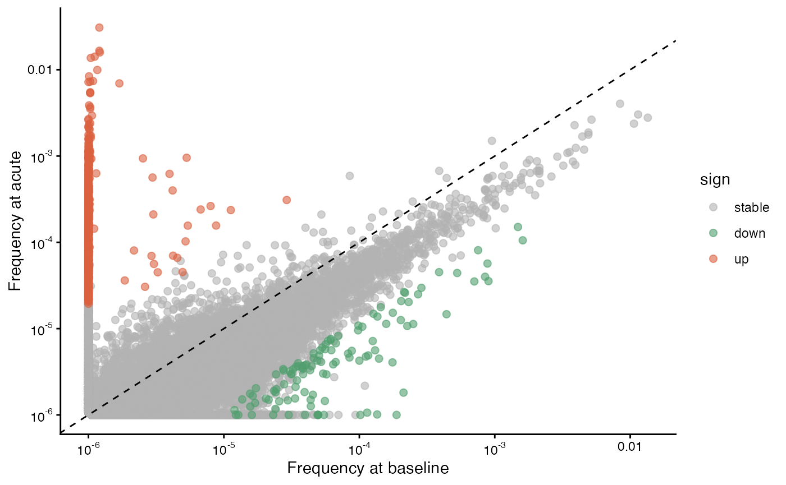
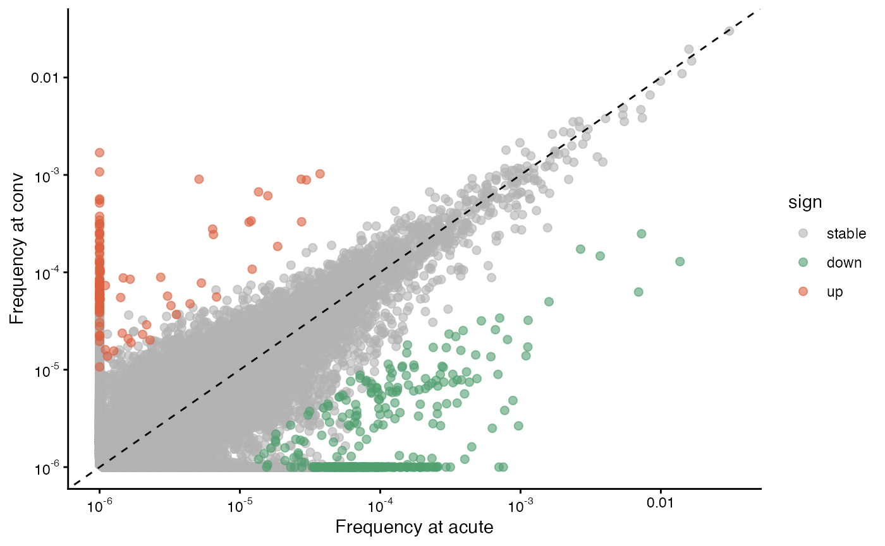
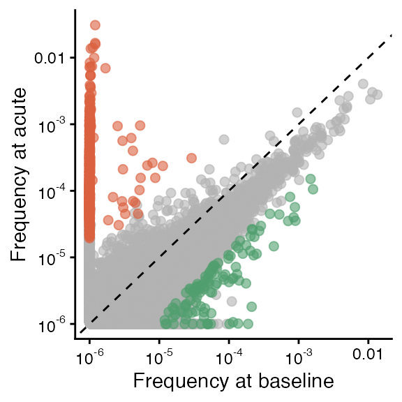
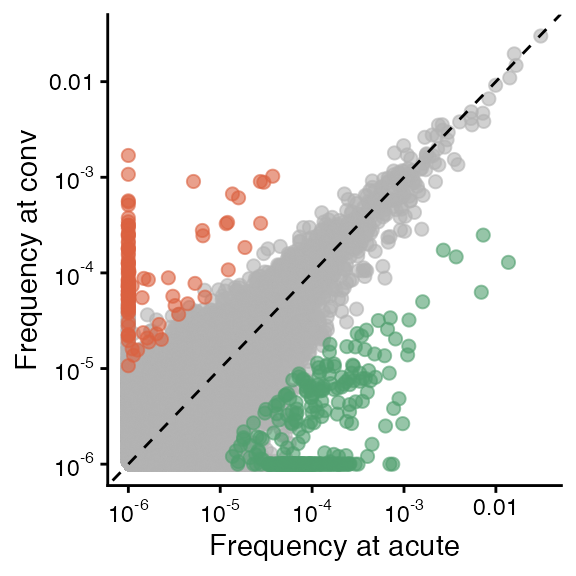

Pairing of alpha/beta TCR chains
2025-11-24
pairing_zenodo_data.RmdTutorial overview
This vignette shows how to generate paired TCR and single-chain “pseudo-bulk” data using raw TIRTLseq TCR-alpha/beta read counts from half of a 384-well plate. We find TCR pairs for CD8+ T-cells isolated from patient samples before and after naturally acquired SARS-CoV-2 infection and re-create a figure from the TIRTLseq paper showing changes in the patient’s TCR repertoire over time.
Study details
For this example, we use data from the St. Jude Tracking Study of Immune Responses Associated with COVID-19 (SJTRC), a clinical trial launched in 2020 to study the T-cell receptor repertoires of adults with naturally acquired COVID-19. This was a prospective, longitudinal cohort study involving adult employees (18 years and older) at St. Jude Children’s Research Hospital in Memphis, TN, USA.
Participants underwent weekly PCR screening for SARS-CoV-2 infection while on the St. Jude campus. Blood samples were collected in 8-ml cell preparation tubes, processed within 24 h into cellular and plasma components, aliquoted and then frozen for future analysis.
Here, we use samples from a healthy 33-year-old female donor with
naturally acquired mild SARS-CoV-2 infection and no prior history of
SARS-CoV-2 infection or vaccination. Samples were collected 143 days
before this donor’s first positive SARS-CoV-2 PCR test
(baseline sample), 6 days after (acute sample)
and 29 days after (convalescent sample).
Instructions
Download data
You will need to download the data from Zenodo before running
this code. The data we are using is exp3_clones.tar.gz,
which includes well-level TIRTLseq data from three 384-well plates. You
will need to unzip the tar.gz file as well as the data for each
plate.
Note: These are large files. The tar.gz file is 1.4 GB and the uncompressed data is 7.8 GB.
Set up input/output directories
Change the folder locations in the following code block to the
directory with your downloaded and unzipped data (folder)
and the directory you would like to save the paired TCR output to
(save_folder).
folder = "~/Downloads/zenodo/exp3_clones/" ### change this to the directory with your downloaded data!
save_folder = "~/git/TIRTLtools/extra/exp3_cd8" ### change this to the folder you would like to save paired output in (if the folder does not exist it will be created)Select plate rows and columns
CD4+ and CD8+ T-cells were isolated from peripheral blood mononuclear cells (PBMCs) in each sample. For each timepoint, CD8+ cells were plated on the left half of wells in a 384-well plate and CD4+ cells were plated on the right half.
In this case, we will pair the CD8+ cells, so we select columns 1 through 12 (the left half of the plate) and rows 1 through 16 (or A through P, all rows).
## Loading required package: ggplot2
tp1 = file.path(folder, "TCR_clones_ID02") ## baseline (pre-infection)
tp2 = file.path(folder, "TCR_clones_ID03") ## acute (6 days after infection)
tp3 = file.path(folder, "TCR_clones_ID04") ## convalescent (29 days after infection)
cd8_wells = get_well_subset(row_range = 1:16, col_range = 1:12) ## left half of the plate (CD8+)Run pairing algorithms
The run_pairing() function will run the pairing scripts,
which implement the MAD-HYPE and T-SHELL algorithms. These algorithms
are implemented in Python using GPU-accelerated packages (with numpy as
a CPU-only backup) for fast calculation. The package should
automatically install a python environment with the necessary packages
and detect the GPU type (NVIDIA or Apple Silicon) of your machine, if it
has one available.
Each function call may take a few minutes to run.
The main arguments of the function are:
-
folder_path- the path of the folder with well-level data -
folder_out- the path of the folder to write results to (the function will create the folder if it does not exist) -
prefix- a prefix (e.g. the sample name) for the output file names -
well_filter_thres- a threshold on the number of unique clones found in a well, for quality control -
well_pos- the position of the well ID (e.g. “B5”) in the file names. -
wellset1- a vector of wells to use for the pairing.
For more information, check the documentation with
?run_pairing.
The well-level data files in each folder are named something like
MVP113_TIRTLseq_P12_S263.TCRa_ID02.clones_TRA.tsv, so the
well ID (P12 in this case) is in the third position
(separate by underscores) so we use well_pos=3. We use the
get_well_subset() function above to generate the vector of
wells for the left side of the plate. With this, we run the
run_pairing() function, saving the output from CD8+ cells
in each plate to the same folder, with a different prefix for each:
<experiment>_<timepoint>_<marker>.
### This function will attempt to automatically install a Python environment with necessary packages for GPU computation
run_pairing(folder_path = tp1, folder_out = save_folder, prefix = "exp3_tp1_cd8", well_filter_thres = 0.5,
well_pos = 3, wellset1 = cd8_wells)## [1] "Folder already exists: ~/git/TIRTLtools/extra/exp3_cd8"## Reading 384 files from ~/Downloads/zenodo/exp3_clones//TCR_clones_ID02## 25 of 384 files loaded## 50 of 384 files loaded## 75 of 384 files loaded## 100 of 384 files loaded## 125 of 384 files loaded## 150 of 384 files loaded## 175 of 384 files loaded## 200 of 384 files loaded## 225 of 384 files loaded## 250 of 384 files loaded## 275 of 384 files loaded## 300 of 384 files loaded## 325 of 384 files loaded## 350 of 384 files loaded## 375 of 384 files loaded## 384 of 384 files loaded## 192 TCRalpha well files loaded## 192 TCRbeta well files loaded## Total number of TCRalpha reads: 6.86e+07## Total number of TCRbeta reads: 9.83e+07## Total number of unique TCRalpha chains: 937880## Total number of unique TCRbeta chains: 928782## 1 out of 192 wells removed by QC: P3## Clone threshold for QC: 3217## Alpha wells passing QC: 191## Beta wells passing QC: 191## Alpha wells failing QC: 1## Beta wells failing QC: 1## Tabulating TCRalpha pseudobulk counts## Writing TCRalpha pseudobulk file... exp3_tp1_cd8_pseudobulk_TRA.tsv## Tabulating TCRbeta pseudobulk counts## Writing TCRbeta pseudobulk file... exp3_tp1_cd8_pseudobulk_TRB.tsv## Pseudobulk done## Merging alpha clonesets...## Done! Unique alpha clones after filtering: 937875## Unique alpha clones in more than 2 wells: 36679## Done! Unique beta clones after filtering: 928777## Unique beta clones and wells in more than 2 wells: 36080## Pre-computing look-up table:## | | | 0% | | | 1% | |= | 1% | |= | 2% | |== | 3% | |=== | 4% | |=== | 5% | |==== | 5% | |==== | 6% | |===== | 7% | |===== | 8% | |====== | 8% | |====== | 9% | |======= | 9% | |======= | 10% | |======== | 11% | |======== | 12% | |========= | 13% | |========== | 14% | |========== | 15% | |=========== | 15% | |=========== | 16% | |============ | 17% | |============ | 18% | |============= | 18% | |============= | 19% | |============== | 19% | |============== | 20% | |=============== | 21% | |=============== | 22% | |================ | 23% | |================ | 24% | |================= | 24% | |================= | 25% | |================== | 25% | |================== | 26% | |=================== | 27% | |=================== | 28% | |==================== | 28% | |==================== | 29% | |===================== | 29% | |===================== | 30% | |====================== | 31% | |====================== | 32% | |======================= | 32% | |======================= | 33% | |======================= | 34% | |======================== | 34% | |======================== | 35% | |========================= | 35% | |========================= | 36% | |========================== | 37% | |========================== | 38% | |=========================== | 38% | |=========================== | 39% | |============================ | 40% | |============================= | 41% | |============================= | 42% | |============================== | 42% | |============================== | 43% | |=============================== | 44% | |=============================== | 45% | |================================ | 45% | |================================ | 46% | |================================= | 47% | |================================= | 48% | |================================== | 48% | |================================== | 49% | |=================================== | 50% | |==================================== | 51% | |==================================== | 52% | |===================================== | 52% | |===================================== | 53% | |====================================== | 54% | |====================================== | 55% | |======================================= | 55% | |======================================= | 56% | |======================================== | 57% | |======================================== | 58% | |========================================= | 58% | |========================================= | 59% | |========================================== | 60% | |=========================================== | 61% | |=========================================== | 62% | |============================================ | 62% | |============================================ | 63% | |============================================= | 64% | |============================================= | 65% | |============================================== | 65% | |============================================== | 66% | |=============================================== | 66% | |=============================================== | 67% | |=============================================== | 68% | |================================================ | 68% | |================================================ | 69% | |================================================= | 70% | |================================================= | 71% | |================================================== | 71% | |================================================== | 72% | |=================================================== | 72% | |=================================================== | 73% | |==================================================== | 74% | |==================================================== | 75% | |===================================================== | 75% | |===================================================== | 76% | |====================================================== | 76% | |====================================================== | 77% | |======================================================= | 78% | |======================================================= | 79% | |======================================================== | 80% | |======================================================== | 81% | |========================================================= | 81% | |========================================================= | 82% | |========================================================== | 82% | |========================================================== | 83% | |=========================================================== | 84% | |=========================================================== | 85% | |============================================================ | 85% | |============================================================ | 86% | |============================================================= | 87% | |============================================================== | 88% | |============================================================== | 89% | |=============================================================== | 90% | |=============================================================== | 91% | |================================================================ | 91% | |================================================================ | 92% | |================================================================= | 92% | |================================================================= | 93% | |================================================================== | 94% | |================================================================== | 95% | |=================================================================== | 95% | |=================================================================== | 96% | |==================================================================== | 97% | |===================================================================== | 98% | |===================================================================== | 99% | |======================================================================| 99% | |======================================================================| 100%## Running pairing algorithms...## Checking for available GPU...
##
## Apple Silicon GPU detected:
## Apple Silicon GPU (M1/M2/M3)
## Checking for GPU-related Python modules...
##
## 'mlx' is installed (for Apple Silicon GPUs).
## Loading mlx
## total number of chunks 73
## start time for MAD-HYPE: 2026-06-15 13:26:33
## Progress: 3500 (10%)
## Progress: 7000 (20%)
## Progress: 14500 (40%)
## Progress: 18000 (50%)
## Progress: 22000 (60%)
## Progress: 25500 (70%)
## Progress: 33000 (90%)
## Progress: 36500 (100%)
## end time for MAD-HYPE: 2026-06-15 13:26:37
## Number of pairs: 13379
## total number of chunks 73
## start processing time for T-Shell: 2026-06-15 13:26:37
## Progress: 3500 (10%)
## Progress: 7000 (20%)
## Progress: 14500 (40%)
## Progress: 18000 (50%)
## Progress: 22000 (60%)
## Progress: 25500 (70%)
## Progress: 33000 (90%)
## Progress: 36500 (100%)
## end time for T-Shell: 2026-06-15 13:26:40## Pairing is finished.## [1] "Filtering results, adding amino acid and V segment information..."
## [1] "Scoring unique pairs..."## Writing TCRalpha/beta pairs... exp3_tp1_cd8_TIRTLoutput.tsv## All pairing is finished!## Number of clones paired by MAD-HYPE algorithm: 13379## Number of clones paired by T-SHELL algorithm: 7304## Total number of unique TCRalpha/beta pairs: 14270## 79.748 sec elapsed## Key: <wi, wj, wij>
## wi wj wij alpha_nuc
## <num> <num> <num> <char>
## 1: 0 3 85 TGTGCAATGAGTTTTAACTTTGGAAATGAGAAATTAACCTTT
## 2: 1 0 56 TGTGCTGGACATACCGGCACTGCCAGTAAACTCACCTTT
## 3: 1 0 56 TGTGCAGGAGCGGAGGATGCTGGTGGTACTAGCTATGGAAAGCTGACATTT
## 4: 0 4 68 TGTGCCGTGGACGTGTACACCGGTAACCAGTTCTATTTT
## 5: 0 4 68 TGCGGCACAGAAAGCGGAGGTAGCAACTATAAACTGACATTT
## ---
## 20679: 40 0 86 TGTGCTCTGAGTGAGACCGGTAACCAGTTCTATTTT
## 20680: 0 1 190 TGTGCAGAGTTGAAGATCTTATAACACCGACAAGCTCATCTTT
## 20681: 0 0 191 TGTGCCGTGAAACAATAACCAGGGAGGAAAGCTTATCTTC
## 20682: 0 24 165 TGTGCAGGAGTTGGGGAGGAAGCCAAGGAAATCTCATCTTT
## 20683: 0 5 186 TGTGCTCTGAGTGACAAATAGGCTTTGGGAATGTGCTGCATTGC
## beta_nuc wa wb
## <char> <int> <int>
## 1: TGTGCCAGCAGTTTATCGTCCCTCGAGGGGGGCTACACCTTC 85 88
## 2: TGCGCCAGCAGCCGAGTCAGAAATCCCGACTACGAGCAGTACTTC 57 56
## 3: TGCGCCAGCAGCCGAGTCAGAAATCCCGACTACGAGCAGTACTTC 57 56
## 4: TGCGCCAGCAGCTTTGACAAGACCTATGGCTACACCTTC 68 72
## 5: TGCGCCAGCAGCTTTGACAAGACCTATGGCTACACCTTC 68 72
## ---
## 20679: TGTGCCAGCAGCCAGGGATCTGGCGGAGACAGTTCTTC 126 86
## 20680: TGTGCCTGGAGTAAGGGTGAGGCCAACGTCCTGACTTTC 190 191
## 20681: TGTGCCAGCAGCACAGGACTGCCAAGAGATACGCAGTATTTT 191 191
## 20682: TGCAGTGCTAGGGGGGACAGCTCCTACGAGCAGTACTTC 165 189
## 20683: TGTGCCAGCAGCTTTCAGGGCGGGGGAACGGTGGGCACAGATACGCAGTATTTT 186 191
## alpha_nuc_seq
## <char>
## 1: TGTGCAATGAGTTTTAACTTTGGAAATGAGAAATTAACCTTT
## 2: TGTGCTGGACATACCGGCACTGCCAGTAAACTCACCTTT
## 3: TGTGCAGGAGCGGAGGATGCTGGTGGTACTAGCTATGGAAAGCTGACATTT
## 4: TGTGCCGTGGACGTGTACACCGGTAACCAGTTCTATTTT
## 5: TGCGGCACAGAAAGCGGAGGTAGCAACTATAAACTGACATTT
## ---
## 20679: TGTGCTCTGAGTGAGACCGGTAACCAGTTCTATTTT
## 20680: TGTGCAGAGTTGAAGATCTTATAACACCGACAAGCTCATCTTT
## 20681: TGTGCCGTGAAACAATAACCAGGGAGGAAAGCTTATCTTC
## 20682: TGTGCAGGAGTTGGGGAGGAAGCCAAGGAAATCTCATCTTT
## 20683: TGTGCTCTGAGTGACAAATAGGCTTTGGGAATGTGCTGCATTGC
## beta_nuc_seq
## <char>
## 1: TGTGCCAGCAGTTTATCGTCCCTCGAGGGGGGCTACACCTTC
## 2: TGCGCCAGCAGCCGAGTCAGAAATCCCGACTACGAGCAGTACTTC
## 3: TGCGCCAGCAGCCGAGTCAGAAATCCCGACTACGAGCAGTACTTC
## 4: TGCGCCAGCAGCTTTGACAAGACCTATGGCTACACCTTC
## 5: TGCGCCAGCAGCTTTGACAAGACCTATGGCTACACCTTC
## ---
## 20679: TGTGCCAGCAGCCAGGGATCTGGCGGAGACAGTTCTTC
## 20680: TGTGCCTGGAGTAAGGGTGAGGCCAACGTCCTGACTTTC
## 20681: TGTGCCAGCAGCACAGGACTGCCAAGAGATACGCAGTATTTT
## 20682: TGCAGTGCTAGGGGGGACAGCTCCTACGAGCAGTACTTC
## 20683: TGTGCCAGCAGCTTTCAGGGCGGGGGAACGGTGGGCACAGATACGCAGTATTTT
## alpha_beta
## <char>
## 1: TGTGCAATGAGTTTTAACTTTGGAAATGAGAAATTAACCTTT_TGTGCCAGCAGTTTATCGTCCCTCGAGGGGGGCTACACCTTC
## 2: TGTGCTGGACATACCGGCACTGCCAGTAAACTCACCTTT_TGCGCCAGCAGCCGAGTCAGAAATCCCGACTACGAGCAGTACTTC
## 3: TGTGCAGGAGCGGAGGATGCTGGTGGTACTAGCTATGGAAAGCTGACATTT_TGCGCCAGCAGCCGAGTCAGAAATCCCGACTACGAGCAGTACTTC
## 4: TGTGCCGTGGACGTGTACACCGGTAACCAGTTCTATTTT_TGCGCCAGCAGCTTTGACAAGACCTATGGCTACACCTTC
## 5: TGCGGCACAGAAAGCGGAGGTAGCAACTATAAACTGACATTT_TGCGCCAGCAGCTTTGACAAGACCTATGGCTACACCTTC
## ---
## 20679: TGTGCTCTGAGTGAGACCGGTAACCAGTTCTATTTT_TGTGCCAGCAGCCAGGGATCTGGCGGAGACAGTTCTTC
## 20680: TGTGCAGAGTTGAAGATCTTATAACACCGACAAGCTCATCTTT_TGTGCCTGGAGTAAGGGTGAGGCCAACGTCCTGACTTTC
## 20681: TGTGCCGTGAAACAATAACCAGGGAGGAAAGCTTATCTTC_TGTGCCAGCAGCACAGGACTGCCAAGAGATACGCAGTATTTT
## 20682: TGTGCAGGAGTTGGGGAGGAAGCCAAGGAAATCTCATCTTT_TGCAGTGCTAGGGGGGACAGCTCCTACGAGCAGTACTTC
## 20683: TGTGCTCTGAGTGACAAATAGGCTTTGGGAATGTGCTGCATTGC_TGTGCCAGCAGCTTTCAGGGCGGGGGAACGGTGGGCACAGATACGCAGTATTTT
## method r ts pval pval_adj loss_a_frac
## <char> <num> <num> <num> <num> <num>
## 1: madhype NA NA NA NA 0.034090909
## 2: madhype NA NA NA NA 0.000000000
## 3: madhype NA NA NA NA 0.000000000
## 4: madhype NA NA NA NA 0.055555556
## 5: madhype NA NA NA NA 0.055555556
## ---
## 20679: tshell 0.5611333 9.319887 3.088615e-17 8.477475e-11 0.000000000
## 20680: tshell 0.5594879 9.280079 3.993057e-17 2.274191e-11 0.005235602
## 20681: tshell 0.5515199 9.089538 1.357749e-16 9.696026e-13 0.000000000
## 20682: tshell 0.5426992 8.882772 5.069335e-16 1.223313e-11 0.126984127
## 20683: tshell 0.5270523 8.526113 4.781799e-15 3.515918e-11 0.026178010
## loss_b_frac score cdr3a va ja
## <num> <num> <char> <char> <char>
## 1: 0.00000000 45.705465 CAMSFNFGNEKLTF TRAV14/DV4 TRAJ48
## 2: 0.01754386 42.204274 CAGHTGTASKLTF TRAV21 TRAJ44
## 3: 0.01754386 42.204274 CAGAEDAGGTSYGKLTF TRAV27 TRAJ52
## 4: 0.00000000 41.731629 CAVDVYTGNQFYF TRAV39 TRAJ49
## 5: 0.00000000 41.731629 CGTESGGSNYKLTF TRAV30 TRAJ53
## ---
## 20679: 0.31746032 17.460590 CALSETGNQFYF TRAV19 TRAJ49
## 20680: 0.00000000 -Inf CAELKIL_NTDKLIF TRAV5 TRAJ34
## 20681: 0.00000000 -4.560842 CAVKQ*P_GGKLIF TRAV12-2 TRAJ23
## 20682: 0.00000000 -3.815652 CAGVGEE_QGNLIF TRAV27 TRAJ42
## 20683: 0.00000000 -Inf CALSDK*_FGNVLHC TRAV19 TRAJ35
## cdr3b vb jb is_functional
## <char> <char> <char> <lgcl>
## 1: CASSLSSLEGGYTF TRBV27 TRBJ1-2 TRUE
## 2: CASSRVRNPDYEQYF TRBV4-1 TRBJ2-7 TRUE
## 3: CASSRVRNPDYEQYF TRBV4-1 TRBJ2-7 TRUE
## 4: CASSFDKTYGYTF TRBV5-1 TRBJ1-2 TRUE
## 5: CASSFDKTYGYTF TRBV5-1 TRBJ1-2 TRUE
## ---
## 20679: CASSQG_WRRQFF TRBV4-2 TRBJ2-1 FALSE
## 20680: CAWSKGEANVLTF TRBV30 TRBJ2-6 FALSE
## 20681: CASSTGLPRDTQYF TRBV5-8 TRBJ2-3 FALSE
## 20682: CSARGDSSYEQYF TRBV20-1 TRBJ2-7 FALSE
## 20683: CASSFQGGGTVGTDTQYF TRBV7-9 TRBJ2-3 FALSE
run_pairing(folder_path = tp2, folder_out = save_folder, prefix = "exp3_tp2_cd8", well_filter_thres = 0.5,
well_pos = 3, wellset1 = cd8_wells)## [1] "Folder already exists: ~/git/TIRTLtools/extra/exp3_cd8"## Reading 384 files from ~/Downloads/zenodo/exp3_clones//TCR_clones_ID03## 25 of 384 files loaded## 50 of 384 files loaded## 75 of 384 files loaded## 100 of 384 files loaded## 125 of 384 files loaded## 150 of 384 files loaded## 175 of 384 files loaded## 200 of 384 files loaded## 225 of 384 files loaded## 250 of 384 files loaded## 275 of 384 files loaded## 300 of 384 files loaded## 325 of 384 files loaded## 350 of 384 files loaded## 375 of 384 files loaded## 384 of 384 files loaded## 192 TCRalpha well files loaded## 192 TCRbeta well files loaded## Total number of TCRalpha reads: 6.86e+07## Total number of TCRbeta reads: 8e+07## Total number of unique TCRalpha chains: 982918## Total number of unique TCRbeta chains: 897704## 1 out of 192 wells removed by QC: E3## Clone threshold for QC: 3936## Alpha wells passing QC: 191## Beta wells passing QC: 191## Alpha wells failing QC: 1## Beta wells failing QC: 1## Tabulating TCRalpha pseudobulk counts## Writing TCRalpha pseudobulk file... exp3_tp2_cd8_pseudobulk_TRA.tsv## Tabulating TCRbeta pseudobulk counts## Writing TCRbeta pseudobulk file... exp3_tp2_cd8_pseudobulk_TRB.tsv## Pseudobulk done## Merging alpha clonesets...## Done! Unique alpha clones after filtering: 980522## Unique alpha clones in more than 2 wells: 58954## Done! Unique beta clones after filtering: 895688## Unique beta clones and wells in more than 2 wells: 56637## Pre-computing look-up table:## | | | 0% | | | 1% | |= | 1% | |= | 2% | |== | 3% | |=== | 4% | |=== | 5% | |==== | 5% | |==== | 6% | |===== | 7% | |===== | 8% | |====== | 8% | |====== | 9% | |======= | 9% | |======= | 10% | |======== | 11% | |======== | 12% | |========= | 13% | |========== | 14% | |========== | 15% | |=========== | 15% | |=========== | 16% | |============ | 17% | |============ | 18% | |============= | 18% | |============= | 19% | |============== | 19% | |============== | 20% | |=============== | 21% | |=============== | 22% | |================ | 23% | |================ | 24% | |================= | 24% | |================= | 25% | |================== | 25% | |================== | 26% | |=================== | 27% | |=================== | 28% | |==================== | 28% | |==================== | 29% | |===================== | 29% | |===================== | 30% | |====================== | 31% | |====================== | 32% | |======================= | 32% | |======================= | 33% | |======================= | 34% | |======================== | 34% | |======================== | 35% | |========================= | 35% | |========================= | 36% | |========================== | 37% | |========================== | 38% | |=========================== | 38% | |=========================== | 39% | |============================ | 40% | |============================= | 41% | |============================= | 42% | |============================== | 42% | |============================== | 43% | |=============================== | 44% | |=============================== | 45% | |================================ | 45% | |================================ | 46% | |================================= | 47% | |================================= | 48% | |================================== | 48% | |================================== | 49% | |=================================== | 50% | |==================================== | 51% | |==================================== | 52% | |===================================== | 52% | |===================================== | 53% | |====================================== | 54% | |====================================== | 55% | |======================================= | 55% | |======================================= | 56% | |======================================== | 57% | |======================================== | 58% | |========================================= | 58% | |========================================= | 59% | |========================================== | 60% | |=========================================== | 61% | |=========================================== | 62% | |============================================ | 62% | |============================================ | 63% | |============================================= | 64% | |============================================= | 65% | |============================================== | 65% | |============================================== | 66% | |=============================================== | 66% | |=============================================== | 67% | |=============================================== | 68% | |================================================ | 68% | |================================================ | 69% | |================================================= | 70% | |================================================= | 71% | |================================================== | 71% | |================================================== | 72% | |=================================================== | 72% | |=================================================== | 73% | |==================================================== | 74% | |==================================================== | 75% | |===================================================== | 75% | |===================================================== | 76% | |====================================================== | 76% | |====================================================== | 77% | |======================================================= | 78% | |======================================================= | 79% | |======================================================== | 80% | |======================================================== | 81% | |========================================================= | 81% | |========================================================= | 82% | |========================================================== | 82% | |========================================================== | 83% | |=========================================================== | 84% | |=========================================================== | 85% | |============================================================ | 85% | |============================================================ | 86% | |============================================================= | 87% | |============================================================== | 88% | |============================================================== | 89% | |=============================================================== | 90% | |=============================================================== | 91% | |================================================================ | 91% | |================================================================ | 92% | |================================================================= | 92% | |================================================================= | 93% | |================================================================== | 94% | |================================================================== | 95% | |=================================================================== | 95% | |=================================================================== | 96% | |==================================================================== | 97% | |===================================================================== | 98% | |===================================================================== | 99% | |======================================================================| 99% | |======================================================================| 100%## Running pairing algorithms...## total number of chunks 117
## start time for MAD-HYPE: 2026-06-15 13:27:44
## Progress: 5500 (10%)
## Progress: 11500 (20%)
## Progress: 17500 (30%)
## Progress: 23500 (40%)
## Progress: 29000 (50%)
## Progress: 29500 (50%)
## Progress: 35000 (60%)
## Progress: 41000 (70%)
## Progress: 47000 (80%)
## Progress: 53000 (90%)
## Progress: 58500 (100%)
## end time for MAD-HYPE: 2026-06-15 13:27:51
## Number of pairs: 16369
## total number of chunks 117
## start processing time for T-Shell: 2026-06-15 13:27:51
## Progress: 5500 (10%)
## Progress: 11500 (20%)
## Progress: 17500 (30%)
## Progress: 23500 (40%)
## Progress: 29000 (50%)
## Progress: 29500 (50%)
## Progress: 35000 (60%)
## Progress: 41000 (70%)
## Progress: 47000 (80%)
## Progress: 53000 (90%)
## Progress: 58500 (100%)
## end time for T-Shell: 2026-06-15 13:27:59## Pairing is finished.## [1] "Filtering results, adding amino acid and V segment information..."
## [1] "Scoring unique pairs..."## Writing TCRalpha/beta pairs... exp3_tp2_cd8_TIRTLoutput.tsv## All pairing is finished!## Number of clones paired by MAD-HYPE algorithm: 16369## Number of clones paired by T-SHELL algorithm: 9888## Total number of unique TCRalpha/beta pairs: 17890## 82.613 sec elapsed## Key: <wi, wj, wij>
## wi wj wij alpha_nuc
## <num> <num> <num> <char>
## 1: 2 2 62 TGTGCTGTGAGCGGCTACAGCTGGGGGAAATTGCAGTTT
## 2: 2 4 60 TGTGCAATGAGTTTTAACTTTGGAAATGAGAAATTAACCTTT
## 3: 3 8 65 TGTGCAATGAGAGAGGGCTCCTTTAGTGGAGGTAGCAACTATAAACTGACATTT
## 4: 4 2 45 TGTGCTTTCAGGCAGGGCGGATCTGAAAAGCTGGTCTTT
## 5: 5 2 47 TGTGCAGAGAGCGACATAGGCTTTGGGAATGTGCTGCATTGC
## ---
## 26253: 29 0 162 TTCATCCGGATAGGCTTTGGGAATGTGCTGCATTGC
## 26254: 0 11 180 TGTGCAGAGAGTATGCCGTGCTTCCAAGATAATCTTT
## 26255: 0 4 187 TGTGCCGTGAGACACAGGAGGAAGCTACATACCTACATTT
## 26256: 14 0 177 TGTGCAGCAAAGGGGGTTTATGGTGGTGCTACAAACAAGCTCATCTTT
## 26257: 0 28 149 TGTGTGGTGAACCCGACGGATAGGCTTTGGGAATGTGCTGCATTGC
## beta_nuc wa wb
## <char> <int> <int>
## 1: TGTGCCAGCAGTTTATCGTCCCTCGAGGGGGGCTACACCTTC 64 64
## 2: TGTGCCAGCAGTTTATCGTCCCTCGAGGGGGGCTACACCTTC 62 64
## 3: TGTGCCAGCAGTTTTTTGGCTAGCGGACAGTACGAGCAGTACTTC 68 73
## 4: TGTGCCAGCAGCGTAGAGGGGCTAGCGGGAAGCACAGATACGCAGTATTTT 49 47
## 5: TGTGCCAGCAGCTTATACAGGGGAGATGGGAATGAGCAGTTCTTC 52 49
## ---
## 26253: TGTGCCAGCAGTCCCCAGGGGGGCTCTATGGCTACACCTTC 191 162
## 26254: TGCGCCAGCAGCCAAGATCGGAGCGGGGATGAGCAGTTCTTC 180 191
## 26255: TGCGCCAGCAGCCAAGATTTTAGCACCTACGAGCAGTACTTC 187 191
## 26256: TGCGCCGGCCCAGCCCGGGAACTATGGCTACACCTTC 191 177
## 26257: TGTGCCAGCAGCTCCTTAGCGGGAGGGCCATACAATGAGCAGTTCTTC 149 177
## alpha_nuc_seq
## <char>
## 1: TGTGCTGTGAGCGGCTACAGCTGGGGGAAATTGCAGTTT
## 2: TGTGCAATGAGTTTTAACTTTGGAAATGAGAAATTAACCTTT
## 3: TGTGCAATGAGAGAGGGCTCCTTTAGTGGAGGTAGCAACTATAAACTGACATTT
## 4: TGTGCTTTCAGGCAGGGCGGATCTGAAAAGCTGGTCTTT
## 5: TGTGCAGAGAGCGACATAGGCTTTGGGAATGTGCTGCATTGC
## ---
## 26253: TTCATCCGGATAGGCTTTGGGAATGTGCTGCATTGC
## 26254: TGTGCAGAGAGTATGCCGTGCTTCCAAGATAATCTTT
## 26255: TGTGCCGTGAGACACAGGAGGAAGCTACATACCTACATTT
## 26256: TGTGCAGCAAAGGGGGTTTATGGTGGTGCTACAAACAAGCTCATCTTT
## 26257: TGTGTGGTGAACCCGACGGATAGGCTTTGGGAATGTGCTGCATTGC
## beta_nuc_seq
## <char>
## 1: TGTGCCAGCAGTTTATCGTCCCTCGAGGGGGGCTACACCTTC
## 2: TGTGCCAGCAGTTTATCGTCCCTCGAGGGGGGCTACACCTTC
## 3: TGTGCCAGCAGTTTTTTGGCTAGCGGACAGTACGAGCAGTACTTC
## 4: TGTGCCAGCAGCGTAGAGGGGCTAGCGGGAAGCACAGATACGCAGTATTTT
## 5: TGTGCCAGCAGCTTATACAGGGGAGATGGGAATGAGCAGTTCTTC
## ---
## 26253: TGTGCCAGCAGTCCCCAGGGGGGCTCTATGGCTACACCTTC
## 26254: TGCGCCAGCAGCCAAGATCGGAGCGGGGATGAGCAGTTCTTC
## 26255: TGCGCCAGCAGCCAAGATTTTAGCACCTACGAGCAGTACTTC
## 26256: TGCGCCGGCCCAGCCCGGGAACTATGGCTACACCTTC
## 26257: TGTGCCAGCAGCTCCTTAGCGGGAGGGCCATACAATGAGCAGTTCTTC
## alpha_beta
## <char>
## 1: TGTGCTGTGAGCGGCTACAGCTGGGGGAAATTGCAGTTT_TGTGCCAGCAGTTTATCGTCCCTCGAGGGGGGCTACACCTTC
## 2: TGTGCAATGAGTTTTAACTTTGGAAATGAGAAATTAACCTTT_TGTGCCAGCAGTTTATCGTCCCTCGAGGGGGGCTACACCTTC
## 3: TGTGCAATGAGAGAGGGCTCCTTTAGTGGAGGTAGCAACTATAAACTGACATTT_TGTGCCAGCAGTTTTTTGGCTAGCGGACAGTACGAGCAGTACTTC
## 4: TGTGCTTTCAGGCAGGGCGGATCTGAAAAGCTGGTCTTT_TGTGCCAGCAGCGTAGAGGGGCTAGCGGGAAGCACAGATACGCAGTATTTT
## 5: TGTGCAGAGAGCGACATAGGCTTTGGGAATGTGCTGCATTGC_TGTGCCAGCAGCTTATACAGGGGAGATGGGAATGAGCAGTTCTTC
## ---
## 26253: TTCATCCGGATAGGCTTTGGGAATGTGCTGCATTGC_TGTGCCAGCAGTCCCCAGGGGGGCTCTATGGCTACACCTTC
## 26254: TGTGCAGAGAGTATGCCGTGCTTCCAAGATAATCTTT_TGCGCCAGCAGCCAAGATCGGAGCGGGGATGAGCAGTTCTTC
## 26255: TGTGCCGTGAGACACAGGAGGAAGCTACATACCTACATTT_TGCGCCAGCAGCCAAGATTTTAGCACCTACGAGCAGTACTTC
## 26256: TGTGCAGCAAAGGGGGTTTATGGTGGTGCTACAAACAAGCTCATCTTT_TGCGCCGGCCCAGCCCGGGAACTATGGCTACACCTTC
## 26257: TGTGTGGTGAACCCGACGGATAGGCTTTGGGAATGTGCTGCATTGC_TGTGCCAGCAGCTCCTTAGCGGGAGGGCCATACAATGAGCAGTTCTTC
## method r ts pval pval_adj loss_a_frac
## <char> <num> <num> <num> <num> <num>
## 1: madhype NA NA NA NA 0.03030303
## 2: madhype NA NA NA NA 0.06060606
## 3: madhype NA NA NA NA 0.10526316
## 4: madhype NA NA NA NA 0.03921569
## 5: madhype NA NA NA NA 0.03703704
## ---
## 26253: tshell 0.5613904 9.326121 2.966752e-17 1.884952e-12 0.00000000
## 26254: tshell 0.5612804 9.323453 3.018323e-17 5.166822e-11 0.05759162
## 26255: tshell 0.5577309 9.237746 5.244842e-17 2.004687e-11 0.02094241
## 26256: tshell 0.5471441 8.986430 2.622689e-16 1.625094e-11 0.00000000
## 26257: tshell 0.5467765 8.977818 2.770591e-16 9.384688e-11 0.15819209
## loss_b_frac score cdr3a va ja
## <num> <num> <char> <char> <char>
## 1: 0.03030303 39.297789 CAVSGYSWGKLQF TRAV21 TRAJ24
## 2: 0.03030303 36.151053 CAMSFNFGNEKLTF TRAV14/DV4 TRAJ48
## 3: 0.03947368 31.946182 CAMREGSFSGGSNYKLTF TRAV14/DV4 TRAJ53
## 4: 0.07843137 30.538566 CAFRQGGSEKLVF TRAV38-1 TRAJ57
## 5: 0.09259259 30.399101 CAESDIGFGNVLHC TRAV13-2 TRAJ35
## ---
## 26253: 0.15183246 -Inf FIRIGFGNVLHC TRAV8-3 TRAJ35
## 26254: 0.00000000 -Inf CAESMP_ASKIIF TRAV5 TRAJ3
## 26255: 0.00000000 -Inf CAVRHRR_SYIPTF TRAV8-1 TRAJ6
## 26256: 0.07329843 -Inf CAAKGVYGGATNKLIF TRAV13-1 TRAJ32
## 26257: 0.00000000 4.507136 CVVNPTDR_FGNVLHC TRAV12-1 TRAJ35
## cdr3b vb jb is_functional
## <char> <char> <char> <lgcl>
## 1: CASSLSSLEGGYTF TRBV27 TRBJ1-2 TRUE
## 2: CASSLSSLEGGYTF TRBV27 TRBJ1-2 TRUE
## 3: CASSFLASGQYEQYF TRBV27 TRBJ2-7 TRUE
## 4: CASSVEGLAGSTDTQYF TRBV9 TRBJ2-3 TRUE
## 5: CASSLYRGDGNEQFF TRBV7-9 TRBJ2-1 TRUE
## ---
## 26253: CASSPQG_LYGYTF TRBV27 TRBJ1-2 FALSE
## 26254: CASSQDRSGDEQFF TRBV4-1 TRBJ2-1 FALSE
## 26255: CASSQDFSTYEQYF TRBV4-1 TRBJ2-7 FALSE
## 26256: CAGPAR_NYGYTF TRBV5-1 TRBJ1-2 FALSE
## 26257: CASSSLAGGPYNEQFF TRBV5-5 TRBJ2-1 FALSE
run_pairing(folder_path = tp3, folder_out = save_folder, prefix = "exp3_tp3_cd8", well_filter_thres = 0.5,
well_pos = 3, wellset1 = cd8_wells)## [1] "Folder already exists: ~/git/TIRTLtools/extra/exp3_cd8"## Reading 384 files from ~/Downloads/zenodo/exp3_clones//TCR_clones_ID04## 25 of 384 files loaded## 50 of 384 files loaded## 75 of 384 files loaded## 100 of 384 files loaded## 125 of 384 files loaded## 150 of 384 files loaded## 175 of 384 files loaded## 200 of 384 files loaded## 225 of 384 files loaded## 250 of 384 files loaded## 275 of 384 files loaded## 300 of 384 files loaded## 325 of 384 files loaded## 350 of 384 files loaded## 375 of 384 files loaded## 384 of 384 files loaded## 192 TCRalpha well files loaded## 192 TCRbeta well files loaded## Total number of TCRalpha reads: 5.9e+07## Total number of TCRbeta reads: 8.3e+07## Total number of unique TCRalpha chains: 850578## Total number of unique TCRbeta chains: 830552## 0 out of 192 wells removed by QC## Clone threshold for QC: 3048## Alpha wells passing QC: 192## Beta wells passing QC: 192## Alpha wells failing QC: 0## Beta wells failing QC: 0## Tabulating TCRalpha pseudobulk counts## Writing TCRalpha pseudobulk file... exp3_tp3_cd8_pseudobulk_TRA.tsv## Tabulating TCRbeta pseudobulk counts## Writing TCRbeta pseudobulk file... exp3_tp3_cd8_pseudobulk_TRB.tsv## Pseudobulk done## Merging alpha clonesets...## Done! Unique alpha clones after filtering: 850578## Unique alpha clones in more than 2 wells: 37721## Done! Unique beta clones after filtering: 830552## Unique beta clones and wells in more than 2 wells: 38382## Pre-computing look-up table:## | | | 0% | | | 1% | |= | 1% | |= | 2% | |== | 3% | |=== | 4% | |=== | 5% | |==== | 5% | |==== | 6% | |===== | 7% | |===== | 8% | |====== | 8% | |====== | 9% | |======= | 9% | |======= | 10% | |======== | 11% | |======== | 12% | |========= | 12% | |========= | 13% | |========= | 14% | |========== | 14% | |========== | 15% | |=========== | 15% | |=========== | 16% | |============ | 17% | |============ | 18% | |============= | 18% | |============= | 19% | |============== | 20% | |=============== | 21% | |=============== | 22% | |================ | 22% | |================ | 23% | |================= | 24% | |================== | 25% | |================== | 26% | |=================== | 27% | |=================== | 28% | |==================== | 28% | |==================== | 29% | |===================== | 30% | |====================== | 31% | |====================== | 32% | |======================= | 32% | |======================= | 33% | |======================== | 34% | |======================== | 35% | |========================= | 35% | |========================= | 36% | |========================== | 36% | |========================== | 37% | |========================== | 38% | |=========================== | 38% | |=========================== | 39% | |============================ | 40% | |============================ | 41% | |============================= | 41% | |============================= | 42% | |============================== | 42% | |============================== | 43% | |=============================== | 44% | |=============================== | 45% | |================================ | 45% | |================================ | 46% | |================================= | 47% | |================================== | 48% | |================================== | 49% | |=================================== | 49% | |=================================== | 50% | |=================================== | 51% | |==================================== | 51% | |==================================== | 52% | |===================================== | 53% | |====================================== | 54% | |====================================== | 55% | |======================================= | 55% | |======================================= | 56% | |======================================== | 57% | |======================================== | 58% | |========================================= | 58% | |========================================= | 59% | |========================================== | 59% | |========================================== | 60% | |=========================================== | 61% | |=========================================== | 62% | |============================================ | 62% | |============================================ | 63% | |============================================ | 64% | |============================================= | 64% | |============================================= | 65% | |============================================== | 65% | |============================================== | 66% | |=============================================== | 67% | |=============================================== | 68% | |================================================ | 68% | |================================================ | 69% | |================================================= | 70% | |================================================== | 71% | |================================================== | 72% | |=================================================== | 72% | |=================================================== | 73% | |==================================================== | 74% | |==================================================== | 75% | |===================================================== | 76% | |====================================================== | 77% | |====================================================== | 78% | |======================================================= | 78% | |======================================================= | 79% | |======================================================== | 80% | |========================================================= | 81% | |========================================================= | 82% | |========================================================== | 82% | |========================================================== | 83% | |=========================================================== | 84% | |=========================================================== | 85% | |============================================================ | 85% | |============================================================ | 86% | |============================================================= | 86% | |============================================================= | 87% | |============================================================= | 88% | |============================================================== | 88% | |============================================================== | 89% | |=============================================================== | 90% | |=============================================================== | 91% | |================================================================ | 91% | |================================================================ | 92% | |================================================================= | 92% | |================================================================= | 93% | |================================================================== | 94% | |================================================================== | 95% | |=================================================================== | 95% | |=================================================================== | 96% | |==================================================================== | 97% | |===================================================================== | 98% | |===================================================================== | 99% | |======================================================================| 99% | |======================================================================| 100%## Running pairing algorithms...## total number of chunks 75
## start time for MAD-HYPE: 2026-06-15 13:29:01
## Progress: 3500 (10%)
## Progress: 11000 (30%)
## Progress: 15000 (40%)
## Progress: 18500 (50%)
## Progress: 22500 (60%)
## Progress: 30000 (80%)
## Progress: 34000 (90%)
## Progress: 37500 (100%)
## end time for MAD-HYPE: 2026-06-15 13:29:04
## Number of pairs: 13076
## total number of chunks 75
## start processing time for T-Shell: 2026-06-15 13:29:04
## Progress: 3500 (10%)
## Progress: 11000 (30%)
## Progress: 15000 (40%)
## Progress: 18500 (50%)
## Progress: 22500 (60%)
## Progress: 30000 (80%)
## Progress: 34000 (90%)
## Progress: 37500 (100%)
## end time for T-Shell: 2026-06-15 13:29:08## Pairing is finished.## [1] "Filtering results, adding amino acid and V segment information..."
## [1] "Scoring unique pairs..."## Writing TCRalpha/beta pairs... exp3_tp3_cd8_TIRTLoutput.tsv## All pairing is finished!## Number of clones paired by MAD-HYPE algorithm: 13076## Number of clones paired by T-SHELL algorithm: 7471## Total number of unique TCRalpha/beta pairs: 13995## 65.972 sec elapsed## Key: <wi, wj, wij>
## wi wj wij
## <num> <num> <num>
## 1: 0 0 55
## 2: 0 0 55
## 3: 1 4 70
## 4: 0 0 44
## 5: 3 5 76
## ---
## 20543: 11 7 165
## 20544: 0 40 149
## 20545: 27 2 133
## 20546: 0 0 192
## 20547: 0 0 192
## alpha_nuc
## <char>
## 1: TGTGCTGTGCAGGCCGAGGAAGCTGCAGGCAACAAGCTAACTTTT
## 2: TGTGCTGTGCAGGCCGAGGAAGCTGCAGGCAACAAGCTAACTTTT
## 3: TGTGTGGTGAACAAAAACAAATTTTACTTT
## 4: TGTGCTTATTCAGGTGACAGCTGGGGGAAATTGCAGTTT
## 5: TGTGCTGTCCCTAATGCTGGCAACAACCGTAAGCTGATTTGG
## ---
## 20543: TGTGCTGTGCTCTAACCTTT
## 20544: TGTGCTTATAGGAGCGCGTGAGGTGCTGGTGGTACTAGCTATGGAAAGCTGACATTT
## 20545: TGCCTCGTGGGTGAAAGGCCGACAAGCTCATCTTT
## 20546: TGTGCGCAAGCCAGGCCCAGCAACATGCTCACCTTT
## 20547: TGTGCCGGGCTTTCAGATGGCCAGAAGCTGCTCTTT
## beta_nuc wa wb
## <char> <int> <int>
## 1: TGTGCCAGCAGTGGTCATAGCGGCACTGAAGCTTTCTTT 55 55
## 2: TGTGCCAGCAGTGAAATTGGCCGGCTCACCTCGGAAGCTTTCTTT 55 55
## 3: TGTGCCAGTACCCGGAGGGGAGAAAACACAGATACGCAGTATTTT 71 74
## 4: TGTGCCAGCAGTTCCTCCCTCGGGATGGGGGAGCAGTACTTC 44 44
## 5: TGTGCCAGCAGTTTATCCAGGACAGGCTATGGCTACACCTTC 79 81
## ---
## 20543: TGCAGTGCTCAACTAGCGGCTTTTTTTCGGGGATACGCAGTATTTT 176 172
## 20544: TGTGCCAGCAGTTTACTTTATCGGCAAGGACCCGTTGATGAAAAACTGTTTTTT 149 189
## 20545: TGCGCCAGCAGCTTGGAATCGACAGGGGTGGTCCTACGAGCAGTACTTC 160 135
## 20546: TGTGCCAGCAGCTCGGACTAGTAGGGTGAGCAGTTCTTC 192 192
## 20547: TGTGCCAGCAGCTCGGACTAGTAGGGTGAGCAGTTCTTC 192 192
## alpha_nuc_seq
## <char>
## 1: TGTGCTGTGCAGGCCGAGGAAGCTGCAGGCAACAAGCTAACTTTT
## 2: TGTGCTGTGCAGGCCGAGGAAGCTGCAGGCAACAAGCTAACTTTT
## 3: TGTGTGGTGAACAAAAACAAATTTTACTTT
## 4: TGTGCTTATTCAGGTGACAGCTGGGGGAAATTGCAGTTT
## 5: TGTGCTGTCCCTAATGCTGGCAACAACCGTAAGCTGATTTGG
## ---
## 20543: TGTGCTGTGCTCTAACCTTT
## 20544: TGTGCTTATAGGAGCGCGTGAGGTGCTGGTGGTACTAGCTATGGAAAGCTGACATTT
## 20545: TGCCTCGTGGGTGAAAGGCCGACAAGCTCATCTTT
## 20546: TGTGCGCAAGCCAGGCCCAGCAACATGCTCACCTTT
## 20547: TGTGCCGGGCTTTCAGATGGCCAGAAGCTGCTCTTT
## beta_nuc_seq
## <char>
## 1: TGTGCCAGCAGTGGTCATAGCGGCACTGAAGCTTTCTTT
## 2: TGTGCCAGCAGTGAAATTGGCCGGCTCACCTCGGAAGCTTTCTTT
## 3: TGTGCCAGTACCCGGAGGGGAGAAAACACAGATACGCAGTATTTT
## 4: TGTGCCAGCAGTTCCTCCCTCGGGATGGGGGAGCAGTACTTC
## 5: TGTGCCAGCAGTTTATCCAGGACAGGCTATGGCTACACCTTC
## ---
## 20543: TGCAGTGCTCAACTAGCGGCTTTTTTTCGGGGATACGCAGTATTTT
## 20544: TGTGCCAGCAGTTTACTTTATCGGCAAGGACCCGTTGATGAAAAACTGTTTTTT
## 20545: TGCGCCAGCAGCTTGGAATCGACAGGGGTGGTCCTACGAGCAGTACTTC
## 20546: TGTGCCAGCAGCTCGGACTAGTAGGGTGAGCAGTTCTTC
## 20547: TGTGCCAGCAGCTCGGACTAGTAGGGTGAGCAGTTCTTC
## alpha_beta
## <char>
## 1: TGTGCTGTGCAGGCCGAGGAAGCTGCAGGCAACAAGCTAACTTTT_TGTGCCAGCAGTGGTCATAGCGGCACTGAAGCTTTCTTT
## 2: TGTGCTGTGCAGGCCGAGGAAGCTGCAGGCAACAAGCTAACTTTT_TGTGCCAGCAGTGAAATTGGCCGGCTCACCTCGGAAGCTTTCTTT
## 3: TGTGTGGTGAACAAAAACAAATTTTACTTT_TGTGCCAGTACCCGGAGGGGAGAAAACACAGATACGCAGTATTTT
## 4: TGTGCTTATTCAGGTGACAGCTGGGGGAAATTGCAGTTT_TGTGCCAGCAGTTCCTCCCTCGGGATGGGGGAGCAGTACTTC
## 5: TGTGCTGTCCCTAATGCTGGCAACAACCGTAAGCTGATTTGG_TGTGCCAGCAGTTTATCCAGGACAGGCTATGGCTACACCTTC
## ---
## 20543: TGTGCTGTGCTCTAACCTTT_TGCAGTGCTCAACTAGCGGCTTTTTTTCGGGGATACGCAGTATTTT
## 20544: TGTGCTTATAGGAGCGCGTGAGGTGCTGGTGGTACTAGCTATGGAAAGCTGACATTT_TGTGCCAGCAGTTTACTTTATCGGCAAGGACCCGTTGATGAAAAACTGTTTTTT
## 20545: TGCCTCGTGGGTGAAAGGCCGACAAGCTCATCTTT_TGCGCCAGCAGCTTGGAATCGACAGGGGTGGTCCTACGAGCAGTACTTC
## 20546: TGTGCGCAAGCCAGGCCCAGCAACATGCTCACCTTT_TGTGCCAGCAGCTCGGACTAGTAGGGTGAGCAGTTCTTC
## 20547: TGTGCCGGGCTTTCAGATGGCCAGAAGCTGCTCTTT_TGTGCCAGCAGCTCGGACTAGTAGGGTGAGCAGTTCTTC
## method r ts pval pval_adj loss_a_frac
## <char> <num> <num> <num> <num> <num>
## 1: madhype NA NA NA NA 0.00000000
## 2: madhype NA NA NA NA 0.00000000
## 3: madhype NA NA NA NA 0.05333333
## 4: madhype NA NA NA NA 0.00000000
## 5: madhype NA NA NA NA 0.05952381
## ---
## 20543: tshell 0.5720433 9.613323 4.437530e-18 2.227029e-12 0.03825137
## 20544: tshell 0.5649058 9.436634 1.403156e-17 4.335102e-11 0.21164021
## 20545: tshell 0.5606716 9.333293 2.741951e-17 8.941224e-12 0.01234568
## 20546: tshell 0.5603970 9.326630 2.862739e-17 1.232782e-12 0.00000000
## 20547: tshell 0.5348014 8.724169 1.345636e-15 1.186768e-11 0.00000000
## loss_b_frac score cdr3a va ja
## <num> <num> <char> <char> <char>
## 1: 0.00000000 43.6537045 CAVQAEEAAGNKLTF TRAV20 TRAJ17
## 2: 0.00000000 43.6537045 CAVQAEEAAGNKLTF TRAV20 TRAJ17
## 3: 0.01333333 40.5646109 CVVNKNKFYF TRAV12-1 TRAJ21
## 4: 0.00000000 38.5965050 CAYSGDSWGKLQF TRAV38-2/DV8 TRAJ24
## 5: 0.03571429 37.4468241 CAVPNAGNNRKLIW TRAV22 TRAJ38
## ---
## 20543: 0.06010929 0.5351472 CAV_LTF TRAV22 TRAJ48
## 20544: 0.00000000 -3.5629470 CAYRSA*GAGGTSYGKLTF TRAV38-2/DV8 TRAJ52
## 20545: 0.16666667 11.0799292 CLVGER_DKLIF TRAV4 TRAJ34
## 20546: 0.00000000 -4.5803554 CAQARPSNMLTF TRAV13-2 TRAJ39
## 20547: 0.00000000 -4.5803554 CAGLSDGQKLLF TRAV12-2 TRAJ16
## cdr3b vb jb is_functional
## <char> <char> <char> <lgcl>
## 1: CASSGHSGTEAFF TRBV5-4 TRBJ1-1 TRUE
## 2: CASSEIGRLTSEAFF TRBV25-1 TRBJ1-1 TRUE
## 3: CASTRRGENTDTQYF TRBV19 TRBJ2-3 TRUE
## 4: CASSSSLGMGEQYF TRBV28 TRBJ2-7 TRUE
## 5: CASSLSRTGYGYTF TRBV27 TRBJ1-2 TRUE
## ---
## 20543: CSAQLAAF_FGDTQYF TRBV20-1 TRBJ2-3 FALSE
## 20544: CASSLLYRQGPVDEKLFF TRBV12-3 TRBJ1-4 FALSE
## 20545: CASSLEST_GWSYEQYF TRBV5-1 TRBJ2-7 FALSE
## 20546: CASSSD**GEQFF TRBV12-3 TRBJ2-1 FALSE
## 20547: CASSSD**GEQFF TRBV12-3 TRBJ2-1 FALSELoad paired TCR data
The output from each call to run_pairing() is 3
tab-separated text files (.tsv):
-
<sample-name>_TIRTLoutput.tsv(.gz)– Paired TCRs – a table of computationally paired alpha/beta TCRs -
<sample-name>_pseudobulk_TRA.tsv(.gz)– Alpha chain “pseudo-bulk” data – a table of read count summary metrics for alpha-chains across all wells on a plate -
<sample-name>_pseudobulk_TRB.tsv(.gz)– Beta chain “pseudo-bulk” data – a table of read count summary metrics for beta-chains across all wells on a plate
The load_tirtlseq() function can be used to load all of
the data in the folder.
This function loads the data into a “list”, which can contain any type of unstructured data, with the following structure:
your_data_object (list)
├───meta (metadata dataframe)
└───data (list)
└───sample_1 (list)
├───alpha (alpha pseudobulk dataframe)
├───beta (beta pseudobulk dataframe)
└───paired (paired pseudobulk dataframe)
...
└───sample_n (list)
├───alpha (alpha pseudobulk dataframe)
├───beta (beta pseudobulk dataframe)
└───paired (paired pseudobulk dataframe)The list contains two slots.
-
meta- a data frame with sample metadata -
data- a list with data for each sample
Since we used
<experiment>_<timepoint>_<marker> for the
prefix for each set of output files, we add this in the
meta_columns argument, so that the function creates a data
frame of sample metadata with this information.
data = load_tirtlseq(save_folder, sep = "_", verbose = FALSE,
meta_columns = c("experiment", "timepoint", "marker"))Plot changes in TCR repertoire over time
After loading the data, we can use the
plot_sample_vs_sample() function to make a scatter plot of
clone frequencies between two samples.
We can re-create the top half of Figure 3B from the paper, showing clone comparisons from baseline (pre-infection) to acute (6 days post-infection) and from acute to convalescent (29 days post-infection)
gg1 = plot_sample_vs_sample(
data$data$exp3_tp1_cd8, data$data$exp3_tp2_cd8,
labelx = "Frequency at baseline", labely = "Frequency at acute",
log2fc_cutoff = 3,
sem_cutoff = 2.5,
smooth_sem = "none"
)## Warning in geom_point(data = dt[dt$sign != "stable", ], aes((avg.x + pseudo1),
## : Ignoring unknown aesthetics: text
gg2 = plot_sample_vs_sample(
data$data$exp3_tp2_cd8, data$data$exp3_tp3_cd8,
labelx = "Frequency at acute", labely = "Frequency at conv",
log2fc_cutoff = 3,
sem_cutoff = 2.5,
smooth_sem = "none"
)## Warning in geom_point(data = dt[dt$sign != "stable", ], aes((avg.x + pseudo1),
## : Ignoring unknown aesthetics: text
gg1 ## baseline vs. acute (top left of Fig. 3B)
gg2 ## acute vs. convalescent (top right of Fig. 3B)
Note that the objects returned by the plotting functions in the
package are almost all ggplot objects, so they can be
modified by any functions in the ggplot2 package such as
the theme() function. ggplot2 function are
loaded by default in TIRTLtools, so they are available to
the user without specifying ggplot2:: before the function
name.
Since the figures are smaller in the paper and without a legend, we can re-create that here.
gg1 + theme(legend.position = "none") ## baseline vs. acute (top left of Fig. 3B)
gg2 + theme(legend.position = "none") ## acute vs. convalescent (top right of Fig. 3B)
Find the number of expanded and contracted clones
We can also call the same function with
return_data = TRUE to get the data used to create the plot,
with read fractions, log2 fold-change, and labels for whether the clone
is expanded, contracted, or stable.
baseline_to_acute_df = plot_sample_vs_sample(data$data$exp3_tp1_cd8, data$data$exp3_tp2_cd8,
return_data = TRUE, smooth_sem = "none")## Warning in geom_point(data = dt[dt$sign != "stable", ], aes((avg.x + pseudo1),
## : Ignoring unknown aesthetics: text
acute_to_conv_df = plot_sample_vs_sample(data$data$exp3_tp2_cd8, data$data$exp3_tp3_cd8,
return_data = TRUE, smooth_sem = "none")## Warning in geom_point(data = dt[dt$sign != "stable", ], aes((avg.x + pseudo1),
## : Ignoring unknown aesthetics: text
baseline_to_acute_df## Key: <targetSequences, aaSeqCDR3, v, j>
## targetSequences
## <char>
## 1: CACAGCGCCGGGACACCTTATGGCTACACCTTC
## 2: CCCGAGCGGCGAGAGATCGGGTTAGAGCAGTACTTC
## 3: CCCTACTCACGGGGCTTACACTGAAGCTTTCTTT
## 4: CGCAGCAGAGGCGCAGATACGCAGTATTTT
## 5: CGCAGCGCCGGAGGGAACACTGAAGCTTTCTTT
## ---
## 44269: TTGTGCTAGTGGTTCTTGGACAGGCAATGAGCAGTTCTTC
## 44270: TTGTGCTAGTGGTTTGATAGGTCAAAACCCAAATGAGCAGTTCTTC
## 44271: TTGTGCTAGTGGTTTGGTGACTAGCGGGAGGGCGGACACCGGGGAGCTGTTTTTT
## 44272: TTTGCCAGTAGTGTTGGCAGAACTGGCTACACCTTC
## 44273: TTTGCCGCGGGACTAGCGGGTCGGGAGCAGTACTTC
## aaSeqCDR3 v j readCount.x n_wells.x
## <char> <char> <char> <num> <num>
## 1: HSAGTPYGYTF TRBV29-1 TRBJ1-2 0 0
## 2: PERREIGLEQYF TRBV19 TRBJ2-7 0 0
## 3: PYSRGL_TEAFF TRBV30 TRBJ1-1 258 11
## 4: RSRGADTQYF TRBV20-1 TRBJ2-3 18 5
## 5: RSAGGNTEAFF TRBV29-1 TRBJ1-1 0 0
## ---
## 44269: LC*WFLD_GNEQFF TRBV12-5 TRBJ2-1 148 16
## 44270: LC*WFDRS_NPNEQFF TRBV12-5 TRBJ2-1 0 0
## 44271: LC*WFGD*R_RADTGELFF TRBV12-5 TRBJ2-2 0 0
## 44272: FASSVGRTGYTF TRBV19 TRBJ1-2 0 0
## 44273: FAAGLAGREQYF TRBV4-2 TRBJ2-7 144 13
## readCount_max.x readCount_median.x sem.x readFraction.x
## <num> <num> <num> <num>
## 1: 0 0 5.627777e-06 0.000000e+00
## 2: 0 0 5.627777e-06 0.000000e+00
## 3: 37 24 8.155221e-07 2.623903e-06
## 4: 7 4 9.325517e-08 1.830630e-07
## 5: 0 0 5.627777e-06 0.000000e+00
## ---
## 44269: 28 9 3.981132e-07 1.505185e-06
## 44270: 0 0 5.627777e-06 0.000000e+00
## 44271: 0 0 5.627777e-06 0.000000e+00
## 44272: 0 0 5.627777e-06 0.000000e+00
## 44273: 21 11 3.998983e-07 1.464504e-06
## max_wells.x avg.x readCount.y n_wells.y readCount_max.y
## <num> <num> <num> <num> <num>
## 1: 0 0.000000e+00 8 6 2
## 2: 0 0.000000e+00 159 17 20
## 3: 191 2.623903e-06 48 6 11
## 4: 191 1.830630e-07 4 1 4
## 5: 0 0.000000e+00 36 6 9
## ---
## 44269: 191 1.505185e-06 64 15 7
## 44270: 0 0.000000e+00 23 5 7
## 44271: 0 0.000000e+00 108 25 14
## 44272: 0 0.000000e+00 288 13 31
## 44273: 191 1.464504e-06 11 2 7
## readCount_median.y sem.y readFraction.y max_wells.y avg.y
## <num> <num> <num> <num> <num>
## 1: 1.0 3.870094e-08 1.000851e-07 191 1.000851e-07
## 2: 9.0 5.352627e-07 1.989191e-06 191 1.989191e-06
## 3: 9.0 2.728054e-07 6.005106e-07 191 6.005106e-07
## 4: 4.0 2.211298e-06 5.004255e-08 191 5.004255e-08
## 5: 7.0 2.013660e-07 4.503830e-07 191 4.503830e-07
## ---
## 44269: 5.0 2.237762e-07 8.006808e-07 191 8.006808e-07
## 44270: 4.0 1.475716e-07 2.877447e-07 191 2.877447e-07
## 44271: 4.0 2.984159e-07 1.351149e-06 191 1.351149e-06
## 44272: 22.0 1.009929e-06 3.603064e-06 191 3.603064e-06
## 44273: 5.5 2.211298e-06 1.376170e-07 191 1.376170e-07
## log2FC sign
## <num> <char>
## 1: 0.1376151 stable
## 2: 1.5797553 stable
## 3: -1.1790120 stable
## 4: -0.1720791 stable
## 5: 0.5364339 stable
## ---
## 44269: -0.4763744 stable
## 44270: 0.3648466 stable
## 44271: 1.2333659 stable
## 44272: 2.2025944 stable
## 44273: -1.1152823 stable
acute_to_conv_df## Key: <targetSequences, aaSeqCDR3, v, j>
## targetSequences
## <char>
## 1: CACAGCGCCGGGACACCTTATGGCTACACCTTC
## 2: CCCGAGCGGCGAGAGATCGGGTTAGAGCAGTACTTC
## 3: CCCTACTCACGGGGCTTACACTGAAGCTTTCTTT
## 4: CGCAGCCCCCAGGAGGGAGGCTATGGCTACACCTTC
## 5: CGCAGCGCCGGAGGGAACACTGAAGCTTTCTTT
## ---
## 43622: TTGTGCTAGTGGTTCTTGGACAGGCAATGAGCAGTTCTTC
## 43623: TTGTGCTAGTGGTTTGATAGGTCAAAACCCAAATGAGCAGTTCTTC
## 43624: TTGTGCTAGTGGTTTGGTGACTAGCGGGAGGGCGGACACCGGGGAGCTGTTTTTT
## 43625: TTTAGCGGCAAGGGATGGTGGAATCAGCCCCAGCATTTT
## 43626: TTTGCCAGTAGTGTTGGCAGAACTGGCTACACCTTC
## aaSeqCDR3 v j readCount.x n_wells.x
## <char> <char> <char> <num> <num>
## 1: HSAGTPYGYTF TRBV29-1 TRBJ1-2 8 6
## 2: PERREIGLEQYF TRBV19 TRBJ2-7 159 17
## 3: PYSRGL_TEAFF TRBV30 TRBJ1-1 48 6
## 4: RSPQEGGYGYTF TRBV29-1 TRBJ1-2 8 3
## 5: RSAGGNTEAFF TRBV29-1 TRBJ1-1 36 6
## ---
## 43622: LC*WFLD_GNEQFF TRBV12-5 TRBJ2-1 64 15
## 43623: LC*WFDRS_NPNEQFF TRBV12-5 TRBJ2-1 23 5
## 43624: LC*WFGD*R_RADTGELFF TRBV12-5 TRBJ2-2 108 25
## 43625: FSGKGWWNQPQHF TRBV14 TRBJ1-5 0 0
## 43626: FASSVGRTGYTF TRBV19 TRBJ1-2 288 13
## readCount_max.x readCount_median.x sem.x readFraction.x
## <num> <num> <num> <num>
## 1: 2 1 3.870094e-08 1.000851e-07
## 2: 20 9 5.352627e-07 1.989191e-06
## 3: 11 9 2.728054e-07 6.005106e-07
## 4: 5 2 8.333671e-08 1.000851e-07
## 5: 9 7 2.013660e-07 4.503830e-07
## ---
## 43622: 7 5 2.237762e-07 8.006808e-07
## 43623: 7 4 1.475716e-07 2.877447e-07
## 43624: 14 4 2.984159e-07 1.351149e-06
## 43625: 0 0 2.134084e-06 0.000000e+00
## 43626: 31 22 1.009929e-06 3.603064e-06
## max_wells.x avg.x readCount.y n_wells.y readCount_max.y
## <num> <num> <num> <num> <num>
## 1: 191 1.000851e-07 0 0 0
## 2: 191 1.989191e-06 0 0 0
## 3: 191 6.005106e-07 70 2 35
## 4: 191 1.000851e-07 14 6 3
## 5: 191 4.503830e-07 15 3 12
## ---
## 43622: 191 8.006808e-07 146 19 16
## 43623: 191 2.877447e-07 25 4 10
## 43624: 191 1.351149e-06 79 14 10
## 43625: 0 0.000000e+00 95 8 18
## 43626: 191 3.603064e-06 290 14 32
## readCount_median.y sem.y readFraction.y max_wells.y avg.y
## <num> <num> <num> <num> <num>
## 1: 0.0 3.884462e-06 0.000000e+00 0 0.000000e+00
## 2: 0.0 3.884462e-06 0.000000e+00 0 0.000000e+00
## 3: 35.0 3.884462e-06 8.434052e-07 192 8.434052e-07
## 4: 2.0 6.673244e-08 1.686810e-07 192 1.686810e-07
## 5: 2.0 1.446004e-07 1.807297e-07 192 1.807297e-07
## ---
## 43622: 7.0 4.064522e-07 1.759102e-06 192 1.759102e-06
## 43623: 5.0 1.979693e-07 3.012161e-07 192 3.012161e-07
## 43624: 5.0 2.602906e-07 9.518430e-07 192 9.518430e-07
## 43625: 11.5 3.799922e-07 1.144621e-06 192 1.144621e-06
## 43626: 18.5 9.497320e-07 3.494107e-06 192 3.494107e-06
## log2FC sign
## <num> <char>
## 1: -0.13761513 stable
## 2: -1.57975527 stable
## 3: 0.20384100 stable
## 4: 0.08726611 stable
## 5: -0.29675516 stable
## ---
## 43622: 0.61565649 stable
## 43623: 0.01501407 stable
## 43624: -0.26852885 stable
## 43625: 1.10072296 stable
## 43626: -0.03455981 stable
table(baseline_to_acute_df$sign)##
## down stable up
## 113 43180 980
table(acute_to_conv_df$sign)##
## down stable up
## 321 43197 108The numbers of expanded and contracted clones match the figures from the paper, with small differences due to differing quality control settings.